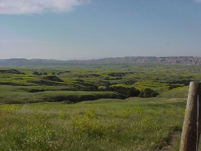
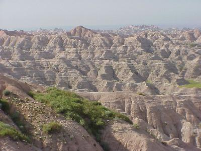
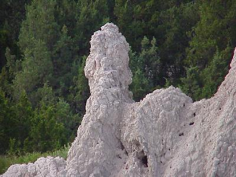
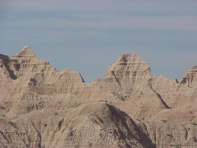
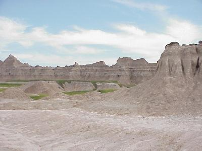
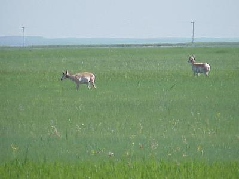
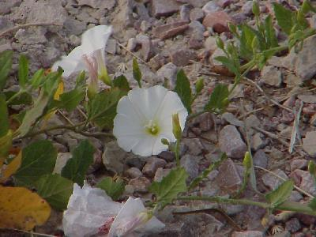
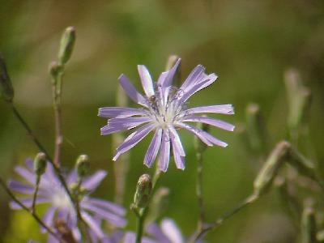
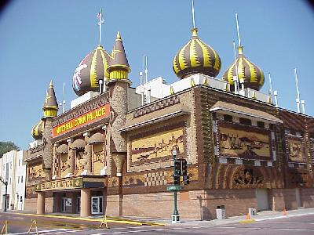
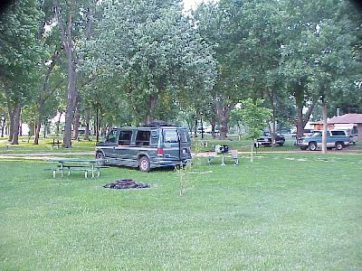

June 21, 10,383 miles
| We started the day early, packed, coffee made, and out of camp by 7:15 - no the mosquitos did not go away from last light. The weather was clear and hot, 90-95 degrees all day! But, by late afternoon it had cooled of a little and had gotten quite windy. | |
| The Badlands, I guess you have to see them to understand the beauty of them. The landscape in the area can go from green grazing lands |  |
| to some landscape that looks like it is from another planet. |  |
| While most of the spires of rock and dirt look like they have been generated by weathering from rain, every now and then we passed one that looked vastly different. |  |
| Without any vegitation the spires looked almost dimensionless in the light we had today, as if they were flat pieces of cardboard, painted and stood up for us to view. |  |
| Another veiw of the Badlands. |  |
| Even in this harsh environment some plant and animal
life does grow. In addition to Dog Town (a bunch of praire dogs) we saw buffalo and Antelope. |
 |
| Again, wild flowers were there also. These are two varieties I don't think we have seen yet. |   |
| Now we needed to log some more miles, which was not all that hard to think about, the van is air conditioned, it is 95+ outside. But, just for my sister, we stopped at the Corn Palace in Mitchell, South Dakota. The building is decorated, inside and out, with ears of colored corn, and some grasses. Each year the corn is pulled off and new corn installed in a different pattern. |  |
| After a long hot day, it cooled off as evening approached, so we chose to camp (as opposed to another night in an air conditioned hotel). We stayed in a municipal campground in Worthington, Minnesota. It was a nice campground, but we were one of only a handful of campers. |  |
| 370 miles today. Wildlife for the day included: praire dogs (lots); pronghorn antelope (12 (including 2 fawns)); buffalo (5); and longhorn cattle. |
|